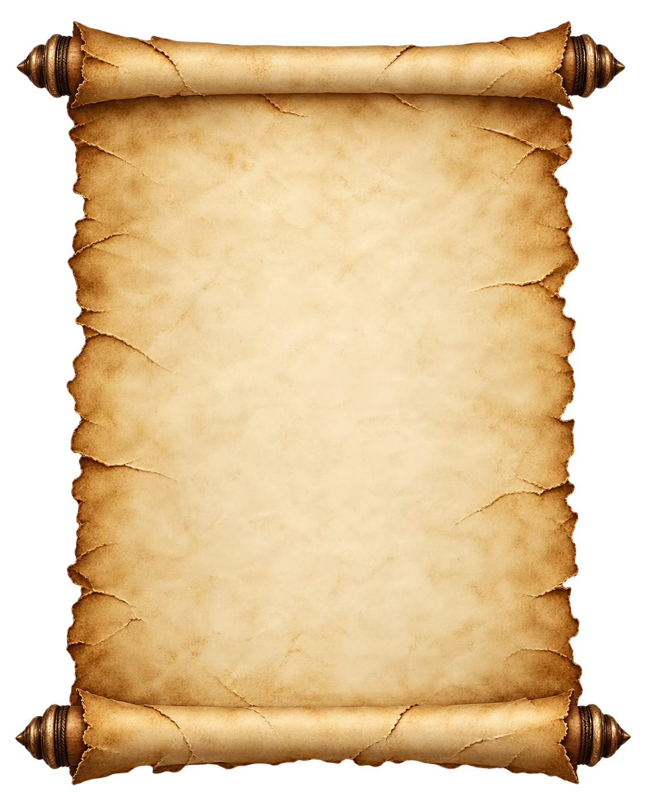

후속 조사 지령서
잊혀진 신의 성당
발령 배경
이 성당은 기록에서 이름이 지워진 신을 섬기던 독립 교단의 거점이었습니다. 교단 소멸 뒤 성당은 봉쇄됐고, 순례자의 계단과 외벽은 붕괴했습니다.
최근 토벌대가 내부 조사를 위해 임시 천막과 진입로를 조성했습니다. 선발대 진입 후 연락이 끊겨 외부 진지는 방치됐습니다.
확인된 상황
- 성당 진입은 정면 입구 한 곳만 확인됐습니다.
- 폐허 순례자의 계단과 토벌대의 임시 진입로가 남아 있습니다.
- 교단의 의식 시설이 내부에 남아 있을 가능성이 있습니다.
임무
- 선발대의 흔적과 마지막 이동 경로를 확인하십시오.
- 성당 내부 구조와 의식 시설을 조사하십시오.
- 발견한 장치와 기록을 보존하십시오.
- 생환 후 조사 결과를 보고하십시오.
교단과 봉인에 관한 기록은 대부분 소실됐습니다.
기존 보고와 다를 경우 현장에서 직접 확인한 사실을 우선하십시오.